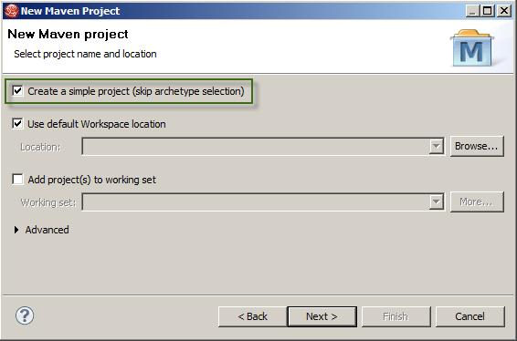
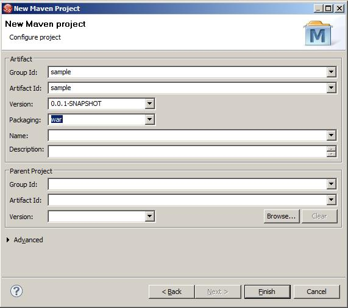
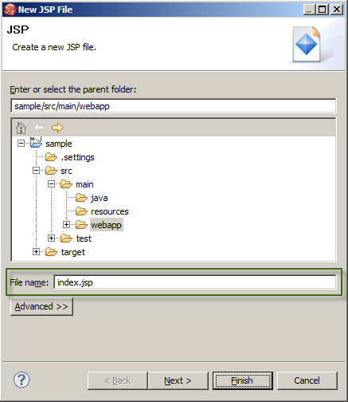
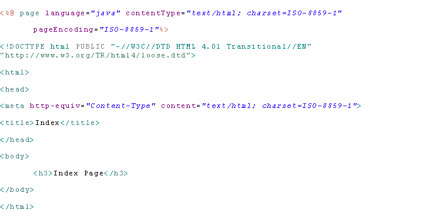

How to implement single sign-on with Windows Azure Active Directory for Office 365 users -Java Application
Table of Contents
Overview
Prerequisites
Step 1 - Create a Java web application
Step 2 - Provision the Java web application in Office 365
Step 3 - Protect the Java web application via WS-Federation and onboard the first customer
Step 4 - Configure the Java web application for single sign-on with multiple tenants Appendix: Deploying to JBOSS on Solaris
Overview
This guide provides instructions for creating a Java web application and configuring it to leverage Windows Azure Active Directory to accept Office 365 users.
Imagine the following scenario:
Fabricam is an independent software vendor with a Java web application
Awesome Computers has a subscription to Office 365
Trey Research Inc. has a subscription to Office 365
Awesome Computers wants to provide their users (employees) with the access to the Fabricam's Java application. After some deliberation, both parties agree to utilize the web single sign-on approach, also called identity federation with the end result being that Awesome Computers' users will be able to access Fabricam's Java application in exactly the same way they access Office 365 applications.
This web single sign-on method is made possible with the help of the Windows Azure Active Directory, which is built into Office 365. Windows Azure Active Directory provides Office 365 tenants with directory, authentication, and authorization services, including a Security Token Service (STS).
With the web single sign-on approach, Awesome Computers will provide single sign-on access to their users through a federated mechanism that relies on an STS. Since Awesome Computers does not have its own STS, they will rely on the STS in their Office 365 tenant provided by Windows Azure Active Directory.
In the instructions provided in this guide, we will play the roles of both Fabricam and Awesome Computers and recreate this scenario by performing the following tasks:
- Create a simple Java application (performed by Fabricam)
Provision a Java web application in Office 365 (performed by Awesome Computers).
Note: As part of this step, Awesome Computers must in turn be provisioned by the Fabricam as a customer of their Java application. Basically, Fabricam needs to know that users from the Office 365 tenant with the domain awesomecomputers.onmicrosoft.com should be granted access to their Java application.
- Protect the Java application with WS-Federation and onboard the first customer (performed by Fabricam)
- Modify the Java application to handle single sign-on with multiple tenants (performed by Fabricam)
Assets
This guide is available together with several code samples and scripts that can help you with some of the most time-consuming tasks. All materials are available at Azure Active Directory SSO for Java for you to study and modify to fit your environment.
Prerequisites
To complete the tasks in this guide, you will need the following:
General environment requirements:
Java-specific requirements:
Java Runtime Environment 1.6
JBoss 7.1.1.Final
JBoss Studio
Step 1 - Create a Java web application
The instructions in this step demonstrate how to create a simple Java application. In our scenario, this step is performed by Fabricam.
*NOTE for the non-Java developer: Maven is a dependency manager and build system. JBOSS Developer Studio, which is based on Eclipse, does not offer those capabilities out of the box. *
To create Java web application:
- Open a new instance of JBoss Developer Studio.
- Create a new project: File -> New Project -> Maven Project.
In the first wizard window select the ‘Create a simple project’ option and click Next.

Provide a Group Id, an Artifact Id, and for Packaging select war. Click Finish.

Open the pom.xml file in the sample project and add the following xml inside the project node to configure the repositories for the external libraries and plugins and to target the project to Java 1.6.
Right-click the sample project and select Maven -> Update Project Configuration… to refresh the project and apply pom.xml file changes. Select both projects and click OK.

Select the sample project, right-click and select New -> JSP File (name it index.jsp).

Replace the generated code with the following:

Right-click the sample project and select Run As -> Run on Server.
Open a Powershell console and run the following command to generate a new GUID for the application:
Note: Make sure to record this value. This identifier will be the AppPrincipalId used in further steps in this guide when provisioning this Jav web applicaiton in Office 365.
Step 2 - Provision the Java web application in Office 365
Instructions in this step demonstrate how you can provision the Java web application in the Office 365 tenant. In our scenario, this step is performed by Awesome Computers. Then Awesome Computers provides the application owner (Fabricam) with the data Fabricam needs in order to set up single sign-on access for Awesome Computers's users.
Note: If you don’t have access to an Office 365 tenant, you can obtain one by applying for a FREE TRIAL subscription on the Office 365’s Sign-up page.
To provision the Java web application in Office 365, Awesome Computers creates a new Service Principal for it in the Office 365 tenant. In order to create a new Service principal for the Java application in the Office 365 tenant, Awesome Computers must obtain the following information from Fabricam:
- The value of the ServicePrincipalName (sample/localhost:8443
- The AppPrincipalId (9a822147-348b-4e0e-8edf-899fe8c117d4)
- The ReplyUrl
To provision the ASP.NET application in Office 365
- Download and install a set of Powershell scripts from the Office 365’s online help page.
Locate the CreateServicePrincipal.ps1 script in this code example set under WAAD.WebSSO.JAVA/Scripts.
Launch the Microsoft Online Services Module for Windows PowerShell console.
Run the SampleAppServicePrincipal.ps1 command from the Microsoft Online Services Module for Windows PowerShell Console.

When asked to provide a name for your Service Principal, type in a descriptive name that you can remember in case you wish to inspect or remove the Service Principal later on.

When prompted, enter your administration credentials for your Office365 tenant:

If the script runs successfully, your screen will look similar to the figure below. Make sure to record the values of the following for use later in this guide:
- company ID
- AppPrincipal ID
- App Principal Secret
- Audience URI

Note: In the command shown here, AppPrincipalId values are those provided by Fabrikam.
The Fabricam's application has been successfully provisioned in the directory tenant of Awesome Computers.
Now Fabricam must provision Awesome Computers as a customer of the Java application. In other words, Fabricam must know that users from the Office 365 tenant with domain awesomecomputers.onmicrosoft.com should be granted access to the Java applicaiton. How that information reaches Fabricam depends on how the subscriptions are handled. In this guide, the instructions for this provisioning step are not provided.
Step 3 - Protect the Java web application via WS-Federation and onboard the first customer
The instructions in this step demonstrate how to add support for federated login to the Java web application created in Step 1. In our scenario, this step is performed by Fabricam.
This step is performed by using the waad-federation library and adding some extra artifacts, like a login page. With the application ready to authenticate requests using the WS-Federation protocol, we’ll add the Windows Azure Active Directory tenant of Awesome Computers as a trusted provider.
Import the waad-federation library from JBoss Developer Studio in the same workspace you created the sample application: File -> Import -> Existing Maven Projects.

Select the folder where the waad-federation library is located and click Finish.

Open the pom.xml file in the sample project and add the following xml inside project node to configure the project’s dependencies.

Right-click the sample project and select Maven -> Update Project Configuration… to refresh the project and apply pom.xml file changes. Select both projects and click OK.

Create a Filter. Right-click the sample project and select New -> Filter. For “Class name” type FederationFilter and click Finish.

Replace the generated code with the following:

Open the web.xml located in the src/main/webapp/WEB-INF folder. Add the following piece inside the web-app node:

*Note: The filter will handle the secured and unsecured pages and will also redirect users to the login page (defined as login-page-url filter’s parameter) if they are not authenticated.
However, the filter will not apply to the incoming Urls that match the allow-regex regular expression parameter.*
Create a login page. Select the sample project, right-click and select New -> JSP File (name it login.jsp)

Replace the generated code with the following:

From JBoss Developer Studio, right-click the src/main/resources folder in the sample project, select New -> Properties file, name it federation and provide the following configuration:
NOTE: audienceuris= and realm= are the values you retrieved from the PowerShell command above. Remember that you must add spn: to be beginning of this value. Use the audienceuri for both values below.

Create the new Servlet. Right-click the sample project and select New -> Other -> Servlet. Name it FederationServlet, click Next and then Finish.

Open the FederationServlet.java file and replace the generated code with the following:

Open the web.xml located inside the src/main/webapp/WEB-INF folder and replace the url-pattern “/FederationServlet” with “/ws-saml”.

Open the index.jsp file and replace the existing code with the following:

Open the web.xml located in the src/main/webapp/WEB-INF folder and add this node under web-app to make the application run over SSL:

NOTE: Ensure that JBoss server is already configured to support SSL.
Right-click the sample project and select Run As -> Run on Server, click Finish and you should be able to see the login page with the “Awesome Computers” link.

Once on the Office 365 identity provider page, you can log in using your awesomecomputers.onmicrosoft.com credentials (e.g. john.doe@awesomecomputers.onmicrosoft.com).

Finally, if the login process is successful, you will be redirected to the secured page (sample/index.jsp) as an authenticated user.

Important: If your application is meant to work with a single Office 365 tenant, for example, if you are writing a LoB application, you can stop following the instructions in this guide at this point. By running the three steps above, you have successfully set up Windows Azure AD-enabled single sign-on to a simple Java web application for the users in one Office 365 tenant.
If, however, you are developing applications that need to be accessed by more than one tenant, the next step can help you modify your code to accommodate multiple tenants.
Step 4 - Configure the Java web application for single sign-on with Multiple tenants
What if Fabricam wants to provide access to its application to multiple customers? The steps we performed in this guide so far ensure that single sign-on works with only one trusted provider. Fabricam's developers must make some changes to their Java web application in order to provide single sign-on to whatever future customers they obtain. The main new features needed are:
- Support for multiple identity providers in the login page
- Maintenance of the list of all trusted providers and the audienceURI they will send to the application; That list can be used to determine how to validate incoming tokens
Let's add another fictitious customer to our scenario, Trey research Inc. Trey Research Inc. must register Fabricam's Java web application in its tenant the same way Awesome Computers have done in Step 2. The following is the list of configuration changes that Fabricam needs to perform to their Java web application to enable multi-tenant single sign-on, intertwined with the provisioning of Trey Research Inc.
From JBoss Developer Studio, right-click the src/main/resources folder in the sample project, select New -> Xml File and provide “trusted.issuers.xml” as the file name. This file will contain a list of the trusted issuers for the application (in this case with Awesome Computers and Trey Research Inc.) which will be used by the dynamic audience Uri validator.

Go to the scripts folder and open the Microsoft.Samples.Waad.Federation.PS link to generate the trusted issuers’ nodes to add to the XML repository. It will ask you for the AppPrincipalId and the AppDomain name to generate the issuer node as depicted below:

*Note: The script retrieves the federation metadata directly from Windows Azure Active Directory to get the issuer identifier for generating the realm’s SPN value. *
Open the XML file, create an issuers root node and include the output node:

Repeat Step 2 to generate Trey Research Inc. node. Notice that you can change the display name to show a user-friendly name.

Open the login.jsp file and replace the import declaration com.microsoft.samples.federation with com.microsoft.samples.waad.federation.

Replace the old link (created for the first trusted issuer) with the following snippet to list all the trusted issuers from the XML repository:

Open the FederationServlet.java file and replace the FederatedLoginManager class with ConfigurableFederatedLoginManager.

Also in the FederationServlet.java file, replace the import declaration com.microsoft.samples.federation.FederatedLoginManager with com.microsoft.samples.waad.federation.ConfigurableFederatedLoginManager.

Open the FederationFilter.java file and replace the FederatedLoginManager class with ConfigurableFederatedLoginManager.

Also in the FederationFilter.java file, replace the import declaration com.microsoft.samples.federation.FederatedLoginManager with com.microsoft.samples.waad.federation.ConfigurableFederatedLoginManager.

Right-click the sample project and select Run As -> Run on Server, and you should see a list with the links for each trusted identity provider retrieved from the “trusted.issuers.xml” repository.

Note: The home realm discovery strategy of presenting an explicit list of trusted providers is not always feasible in practice. Here it is used for the sake of simplicity.
Once you see the list of the trusted identity providers in your browser, you can navigate to either provider: the authentication flow will unfold in the same way described in the former section. The application will validate the incoming token accordingly. You can try to delete entries in trusted.issuers.xml, as it would happen, for example, once a subscription expires, and verify that the application then will reject authentication attempts from the corresponding provider.
Appendix: Deploying to JBOSS on Solaris
This sample has been tested on JBOSS 7.1 running on Solaris.
To deploy to JBOSS on Solaris:
Download the Virtualbox Solaris appliance from http://www.oracle.com/technetwork/server-storage/solaris11/downloads/virtual-machines-1355605.html
Note: you must have an Oracle account to download the bits and accept the license when downloading it.
Import the Solaris Virtualbox Appliance (README inside the OracleSolaris1111-11VM.zip file).
Note: DO NOT INSTALL THE VM ADDITIONS as that might cause serious performance issues
Once the machine is up and running, open a Terminal window.
Copy WAAD.WebSSO.Java.ZIP to the Downloads folder
Go to the Downloads folder
cd ~/Downloads
Unzip the contents of the drop:
unzip ./WAAD.WebSSO.Java.ZIP -d ./ilex
Download JBoss 7.1:
curl http://download.jboss.org/jbossas/7.1/jboss-as-7.1.1.Final/jboss-as-7.1.1.Final.zip -o ./jboss-as-7.1.1.Final.zip
Unzip the JBoss 7.1 contents
unzip ./jboss-as-7.1.1.Final.zip -d ./
Open the standalone configuration file with GEdit from the Teminal:
gedit ./jboss-as-7.1.1.Final/standalone/configuration/standalone.xml
Locate the node with the urn:jboss:domain:web:1.1 namespace, and replace the node by this one. Replace the user_name value with the current user (username used to login to Solaris VM)

Save the file, close GEdit and return to the Terminal window
Go to the server folder.
cd ~/Downloads/jboss-as-7.1.1.Final/bin
Start the server
./standalone.sh
To deploy the WAR file:
Open a new Terminal window.
Copy in the Download folder the WAR created in the walkthrough
Go to the server folder.
cd ~/Downloads/jboss-as-7.1.1.Final/bin
Run the JBoss client to deploy the application.
./jboss-cli.sh
Connect to the server.
connect
Deploy the application using the file downloaded in the first step.
deploy ~/Downloads/sample.war --force
Open a browser and navigate to https://localhost:8443/sample/